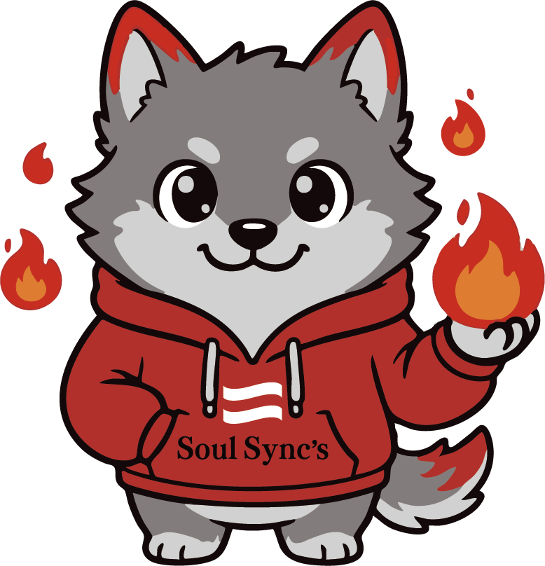

AX Solution
30点の試作を持って、あなたの現場に入ります。
開発中も、運用後も、ずっと隣で一緒に考える。
それが、ソウルシンクスの「伴走」という仕事です。
INDUSTRY CHALLENGES
業界は違っても、根本原因は同じです。
あなたの現場に当てはまるものを選んでください。
事業が拡大して従業員が70名を超えたあたりから、「誰が」「何を」「どこまで進めているか」が、見えなくなる。
進捗会議で報告を聞いても、結局、現場で何が起きているのか経営者にはわからない。これが、BPO事業の「見えない壁」です。
経営者 ←（？）→ 現場
進捗会議で報告は聞くが実態が見えない
経営者 ←（見える）→ 現場
リアルタイムで状況を把握、問題を早期発見
ベテランと若手で仕上がりが全然違う。マニュアルはあるけれど、暗黙知が多すぎて若手が覚えきれない。これが、製造業の「見えない壁」です。
お客様アンケートは取っているが、結局、Excelに眠っている。現場スタッフは「またアンケートか」と感じている。これが、サービス業の「見えない壁」です。
ROOT CAUSE
業界を問わず、根本原因はこの3つです。これを解決すれば「見えない壁」は消えます。
Excel、Slack、メール、スプレッドシート…
情報があちこちに散らばっている。
情報を探すだけで年間120時間のロス。
Aさんの「完了」＝納品済み
Bさんの「完了」＝請求書発行済み
同じ言葉なのに意味が違う。
現場は忙しい。データ入力は後回しになる。
結果、データが古くて使えない。
リアルタイムで判断できない。
Step 4から始めると、失敗します
HONESTY PROOF
「AIで全部解決」なんて、嘘です。できることと、できないことを最初に明確にします。過大な期待を持たせるより、正直に向き合う方が長く続く関係を作れます。
「完璧になってから見せる」は時間の無駄です。30点の試作を見せて、あなたの反応を聞いて、一緒に120点に育てます。2週間ごとに触ってもらい、「違う」と思ったらすぐ修正。
システムは動いても、人が動かなければ意味がない。運用開始後の1ヶ月が勝負です。現場の困りごとに即対応し、使い方の変化にも柔軟に。私たちは、ずっと一緒にいます。
CASE STORY
「最初は、正直、半信半疑でした。
『30点の試作を見せる』と言われて、大丈夫かな？と。
でも、2週間後に触れる状態を見せてもらって、
『あ、これ使えそう』と思えました。
そこから、2週間ごとに『ここが欲しい』と伝えると、
次の打ち合わせで実装されている。
今では、朝一番にこのシステムを開くのが日課になっています。」
— BPO事業 代表取締役
DIFFERENTIATION
| 項目 | 一般的な開発会社 | ソウルシンクス |
|---|---|---|
| 提案の入り方 | 「AIで解決します」 | 「現場を見せてください」 |
| 最初にやること | 要件定義（3ヶ月） | 根本原因の診断（2週間） |
| 開発の順序 | いきなりAI導入 | 正本づくり → その上でAI |
| 進捗の見せ方 | 完成まで見せない | 2週間ごとに触ってもらう |
| 修正対応 | 仕様変更は追加費用 | 一緒に育てる前提（柔軟） |
| 納品後 | 基本的に終了 | 運用後も隣で伴走 |
| できないこと | 曖昧にしがち | 最初に正直に言う |
| 関係性 | 発注者 vs 受注者 | 伴走パートナー |
PROCESS
まず、お互いを知るための時間。ヒアリング、根本原因の仮説出し、「やらない」という選択肢の提示まで。
実際に現場に入り、根本原因を特定します。診断レポートと解決策・見積もりを提示。
AIを入れる前の土台作り。情報の集約、言葉の定義合意、入力負荷の削減。
完璧じゃないけど、触れる状態を作ります。核心機能だけに絞り、まず「感触」を確かめます。
2週間ごとに改善版を見せながら、段階的に機能を追加します。色分け → アラート → AI予測と進化。
「納品して終わり」には絶対にしません。ずっと一緒にいます。
PRICING
ここまで無料。納得してから次へ。
いつでも解約可能
GET STARTED
強引な営業は一切しません。
「やらない」という選択もOKです。
この相談でお話しすること
